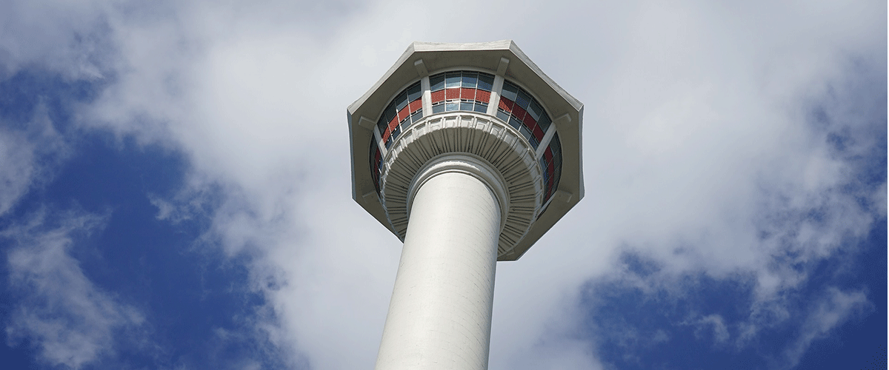

사하구
영진돼지국밥
부산 신평 맛집, 수백 맛있는 집, 비오는 날 따끈한 수육과 국밥 먹으러 가고싶은 곳
부산 사하구 하신번영로 157번길 39메이드인제이
스윙스도 반할 경양식 돈까스, 부드러운 수제 돈까스
부산 사하구 낙동대로 182 경성스마트W 2차 상가 104동 301호영도구
태종대 욜로 조개구이
부산 조개구이, 여기다! 분위기와 함께 녹는 치즈 조개구이
부산 영도구 감지길87번길 21왔다식당
맛 칼럼리스트도 추천한 집, 밑반찬까지 맛있는 한식 집
부산 영도구 하나길 811

중구
한월식당
겉바속촉 생선구이, 10마리도 가능. 식객허영만도 반했다
부산 중구 자갈치해안로 27루흐
골목의 작은 비스트로 펍, 나만 알고싶은데 이미 핫플레이스
부산 중구 구덕로14번길 3-1괴정역 6번 출구
괴정 사거리 뉴코아 아울렛 맞은 편마을버스 사하1 ⁄ 사하1-1
토성역 6번 출구
부산대학교병원 암센터 앞마을버스 사하1-1 ⁄ 서구2 ⁄ 서구2-2
괴정역 6번 출구
괴정 사거리 뉴코아 아울렛 맞은 편마을버스 사하1 ⁄ 사하1-1
토성역 6번 출구
부산대학교병원 암센터 앞마을버스 사하1-1 ⁄ 서구2 ⁄ 서구2-2